1、程序分析
在正式开发之前，首先需要对程序进行简单的分析。只有合理的分析程序界面以及要实现的功能之外，才能更好的开发这个软件。
如下：
运行平台：安卓平台，安卓5.0及以上系统。
界面设计：共分两个区域，显示区域和计算区域，如下图所示：
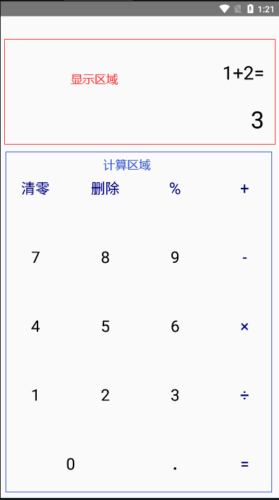
显示区域：
在显示区域又分为上下两个部分，分别为“公式区”和“结果区”，用于分别显示计算公式和计算结果，可使用文本框组件显示。
计算区域：
计算区域的布局为4×5的宫格布局，可使用5个线性布局器和19个文本框，并利用权重布局实现效果。
注：计算区最后一行只有三个内容，因此需要单独设置权重布局。
具体功能：按下数字键和运算符键后，最终能够实现简单的数学运算。为防止在公式区出现无意义的计算公式，因此按下某键之前进行相关的判断工作，譬如：按下某运算符键后，需要首先判断一下在公式区是否已经输入了运算符，防止重复输入。
2、程序开发
2.1 项目创建
利用快捷键“Ctrl + Shift + N”打开项目创建窗口，根据需求选择一个安卓平台下具有窗口的项目模板。
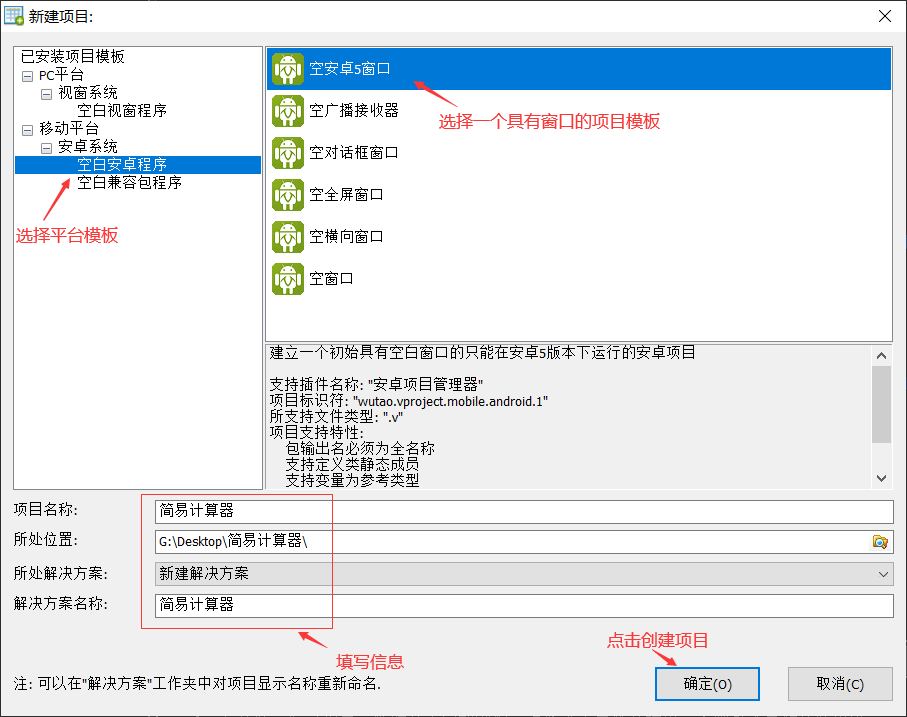
项目创建完毕：
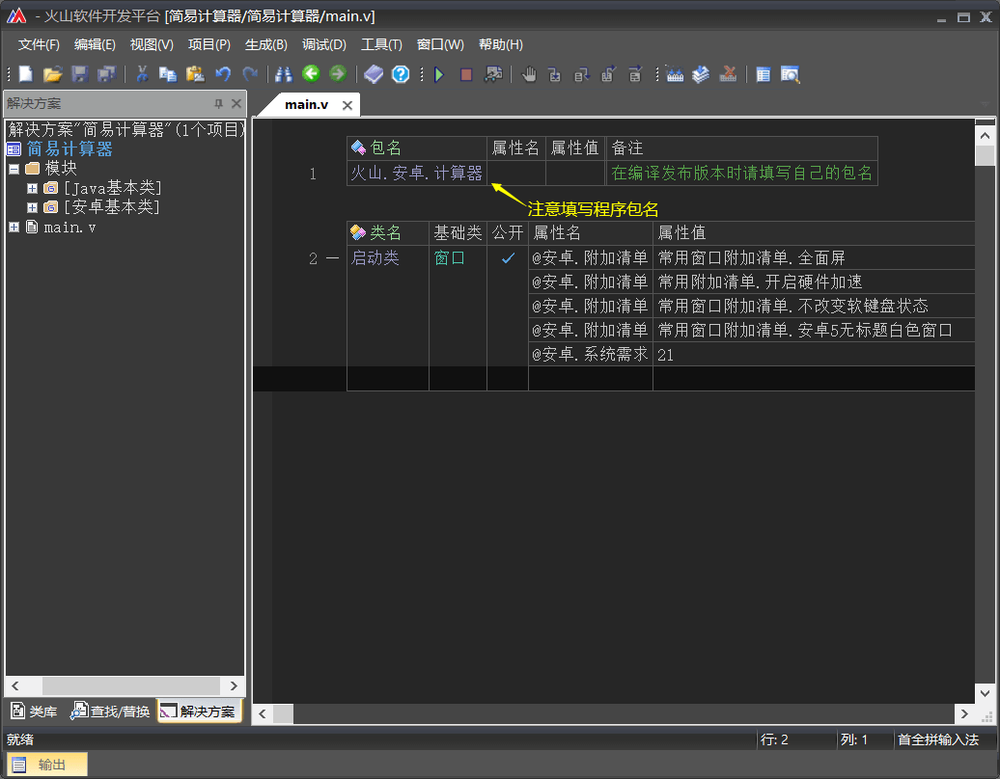
2.2 界面设计
使用快捷键“Ctrl + U”打开界面设计器，因界面较为复杂，需要进行逐步设计。
(1) 在界面中拖放两个文本框和五个线性布局器组件，并按“Ctrl”键依次将所有组件全部选中，并设置以下属性：
剩余空间权重：10；
组件宽度类型：匹配父组件宽度；
组件高度类型：直接指定，并设置高度值为0，只有设置高度为0后“剩余空间权重”才会按照比例进行分配尺寸。
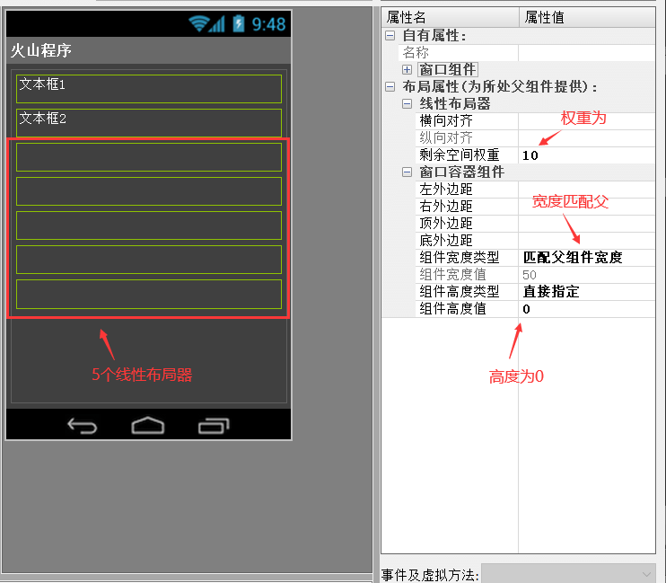
(2) 因所有组件已经将剩余空间权重设置为10，为了能够让组件按照比例平均分配，因此需要选中启动类布局，将“剩余空间总权重”设置为70，这样所有组件就可以等比例的分配尺寸。
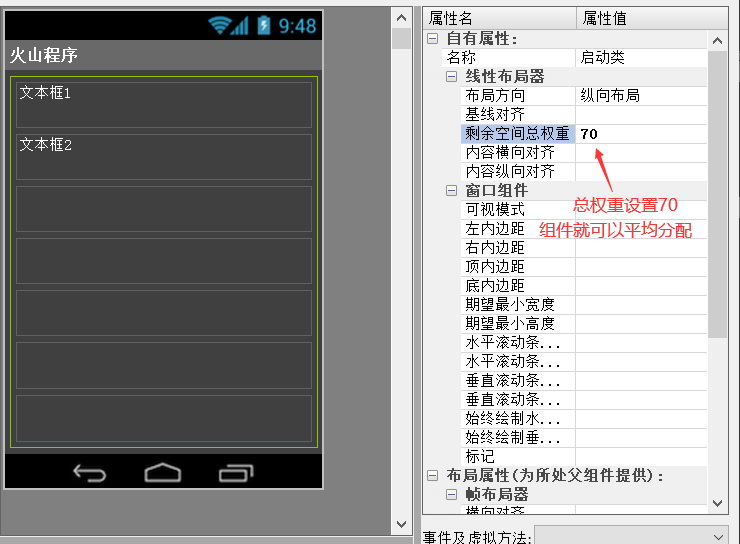
(3) 按“Ctrl”键，选中两个文本框组件，并分别设置以下属性：
内容横向对齐：右对齐；
内容纵向对齐：居中；
文本颜色：黑色；
字体尺寸：30，如果最终运行效果和软件效果图有偏差，可以自行调整；
右内边距：25；
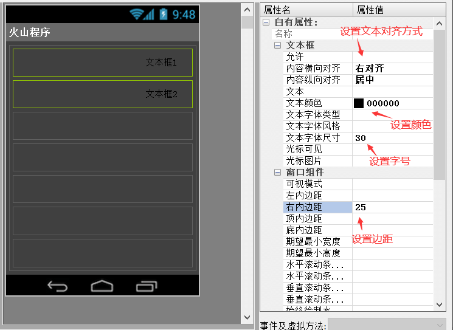
(4) 单独选中“文本框2”组件，本组件最终会存放计算结果，因此可以将其文本尺寸修改大一些，方便和存放计算公式的文本框形成反差效果。
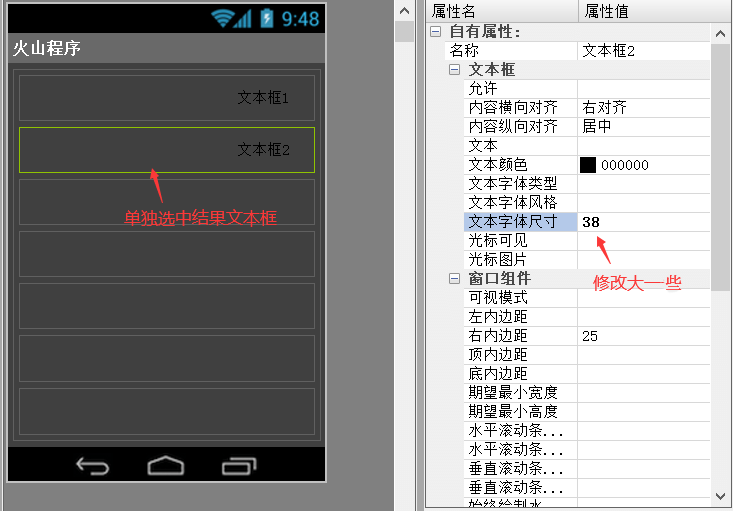
(5) 因考虑到两个文本框都是居中对齐，最终可能会导致两个文本内容直接间隙过大，因此可以选中“文本框1”组件，将其内容调整为“底对齐”。
那为什么不去调整文本框2的对齐方式呢？
其实很简单，因为调整文本框2的对齐方式，最终可能会导致文本框2的内容和计算区域直接间隙过大，影响软件的整体美观效果。
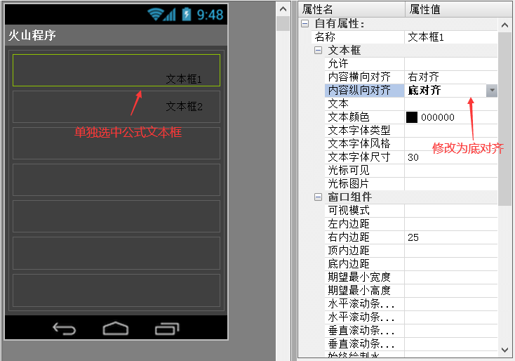
(6) 按“Ctrl”键选中所有的线性布局器，将其布局方向设置为“横向布局”。
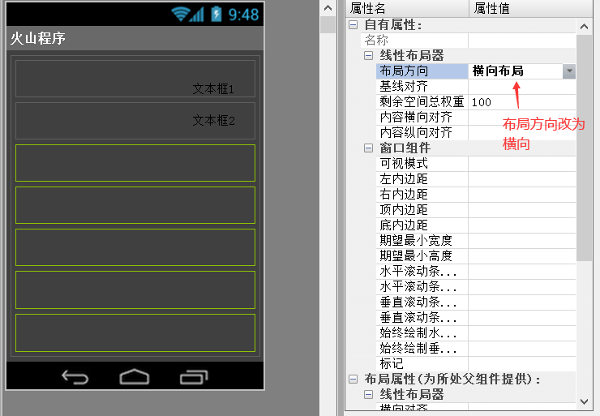
(7) 在任意一个线性布局器内，拖放四个文本框组件，并按“Ctrl”键全部选中，然后设置以下属性：
内容横向对齐：居中；
内容纵向对齐：居中；
文本颜色：黑色；
文本字体尺寸：26；
剩余空间权重：25；
组件宽度：0；
组件高度：匹配父组件高度；
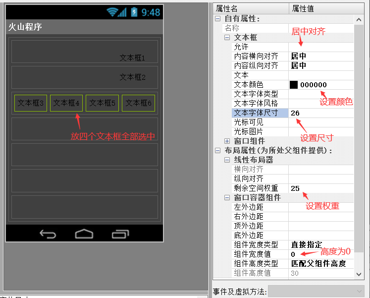
(8) 属性设置完毕后，选中四个文本框组件进行右键并选择复制。
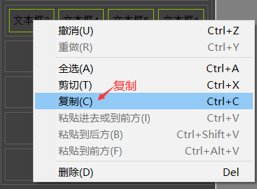
(9) 复制后依次粘贴到其它线性布局器中，粘贴后的组件会自动拥有被复制组件的属性。
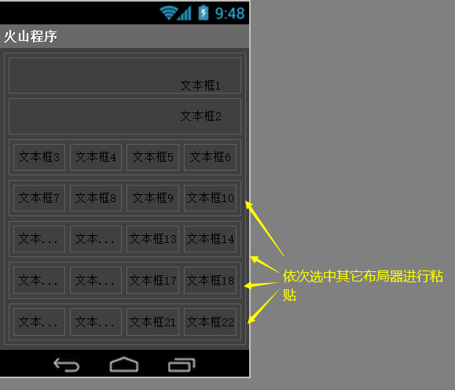
(10) 因最后一个线性布局器只有三个内容，因此需要删除一个文本框组件，并修改其中一个文本框的权重为50。
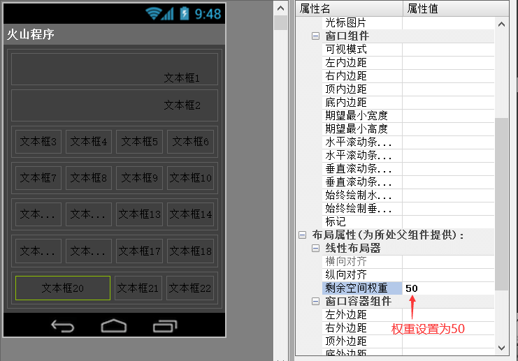
(11) 可以选中非数字区域的文本框，修改其颜色增加美观效果。
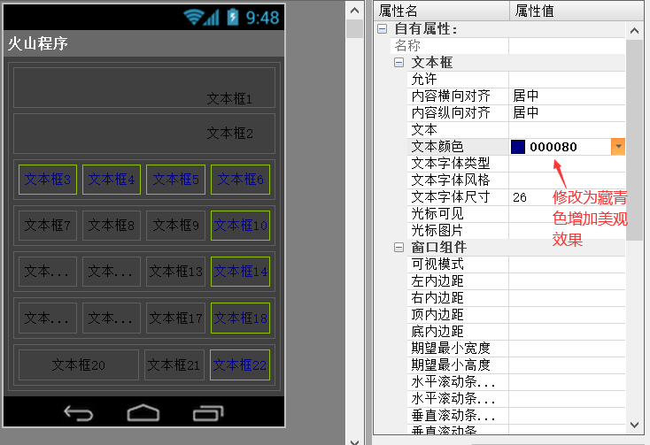
(12) 选中文本框3、4，因这两个文本框最终会存放汉字，在视觉上会比数字、运算符看起来稍微大一些，为了整体视觉效果可以适当的降低字体尺寸。
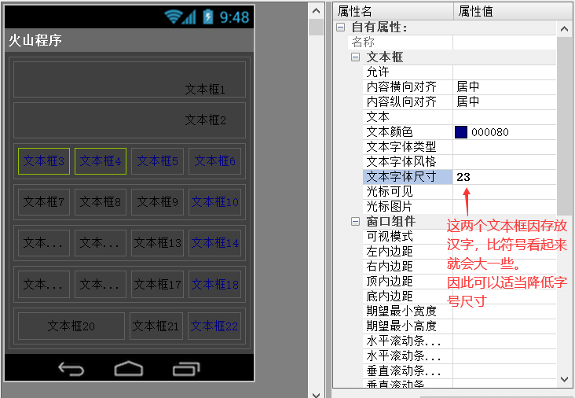
(13) 然后按照设计图效果，依次修改文本框名称设置文本框内容。
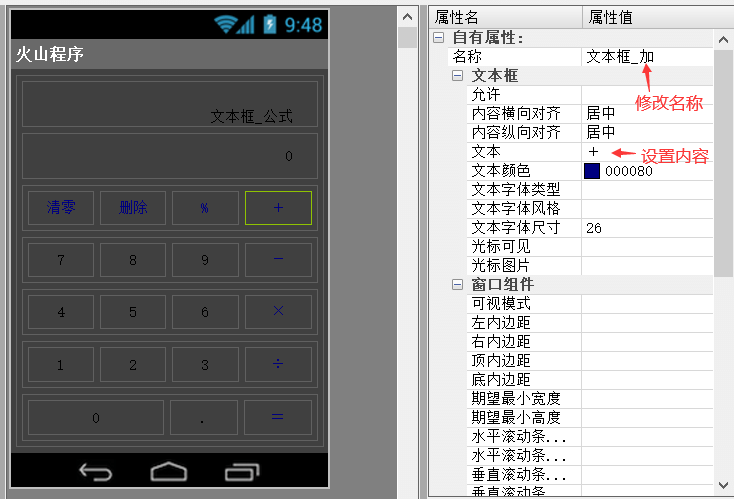
(14) 至此界面设计完毕，可以进行调试查看一下界面效果，效果不满意可以根据自己的需求进行调整。
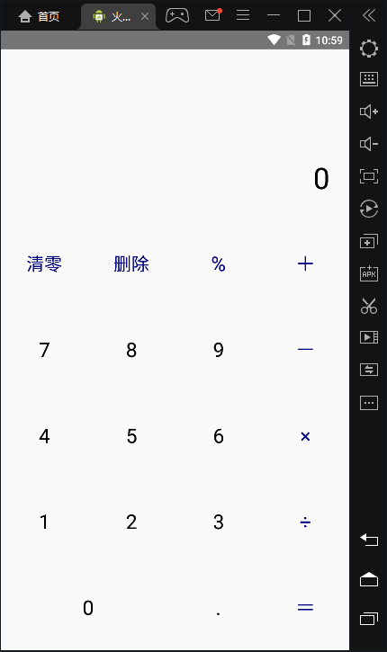
2.3 代码编写
(1) 首先将所有需要操作的文本框设置“支持单击”和“支持触摸”属性为真，如果不设置将无法进行单击和触摸。
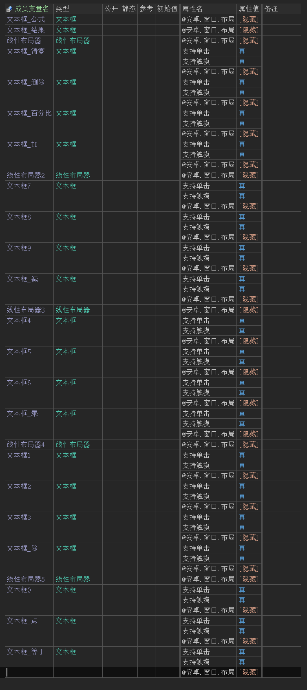
(2) 任意找一个文本框组件，添加触摸事件。
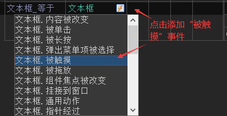
(3) 在触摸事件下判断触摸动作类型，当按下时修改背景色为0xCCCCCCCC(即半透明浅灰色)，抬起后修改为透明色。
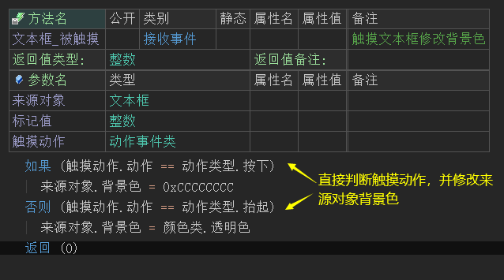
(4) 最终可以实现如下效果：
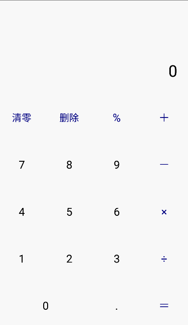
(5) 在正式开始实现计算功能之前，我们首先需要封装三个常用方法出来，为后面的计算过程提供帮助。
是否为数值：
譬如：在按下“加号”键时，可用于验证公式文本框中，是否已经输入了整数或小数，从而决定是否在公式文本框中添加加号符。
其中本方法“参数2”的作用，是用于在按下小数点时，验证公式文本框中是否输入的为整数，从而决定是否在公式文本框中添加小数点。
注：正则表达式类需要配置“正则表达式支持”模块才能使用。
方法解析：
正则表达式类.是否完全匹配()
在本方法的作用，是用于验证提供的文本是否全部为数字，如果全是数字则返回真。
文本到小数()
在本方法中判断不等于0，用于验证提供的文本是否为数值。
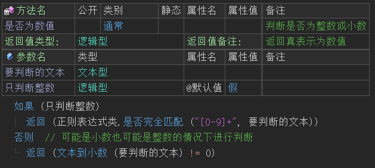
清除尾部0：
因在计算过程中采用小数进行计算，即使最终结果值是整数，最后也会以“.0”结尾，本方法用于清除尾部的“.0”。
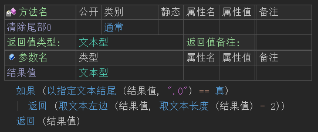
计算公式结果：
利用正则文本分割()方法，对公式文本框中的内容进行分割后计算结果。
注：相减运算不能使用正则文本分割，因为要考虑负数运算的问题。
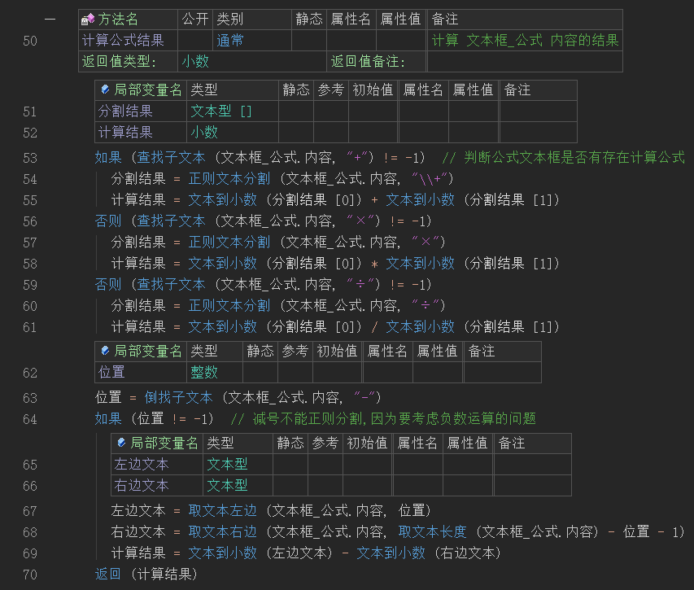
(6) 任意使用一个文本框添加文本框被单击事件。
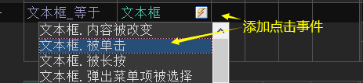
(7) 添加事件后将需要操作的文本框，使用如果否则语句进行判断其来源对象。
其中加减乘除运算符和所有的数字键统一进行判断。
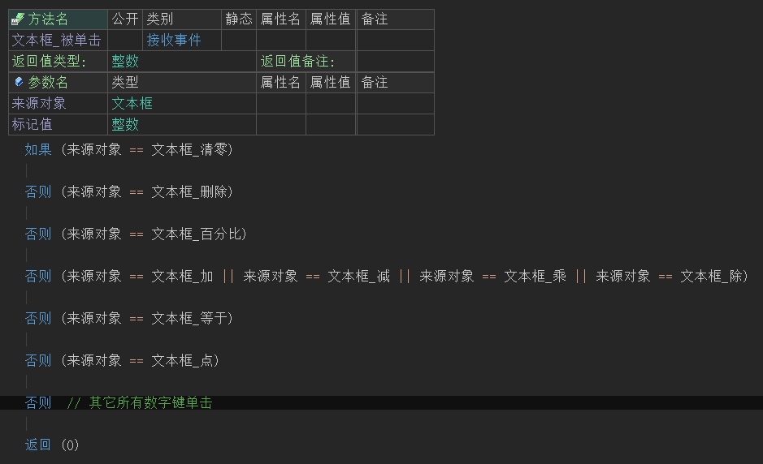
(8) “文本框_清零”被单击：
直接将公式文本框设置为空文本，结果文本框设置为0即可。
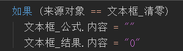
(9) “文本框_删除”被单击：
当删除被单击时，首先验证公式文本框是否为空或其结尾文本为等于号，如果满足条件就执行清零操作。
当不满足条件时，就利用“取文本左边()”方法对公式文本框的内容进行删除一个字符，将删除后的内容重新赋值给公式文本框。
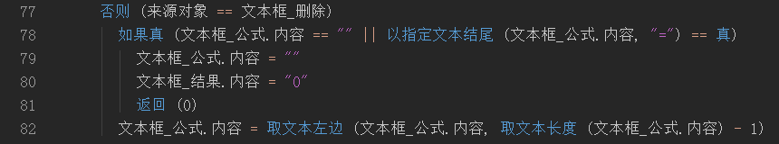
(10) “文本框_百分比”被单击：
在操作之前首先验证公式文本框的内容是否为空，当不等于空的时候在进行百分比的处理。
85-88行：
用于判断公式文本框是否只输入了数值，如果满足条件就进行百分比处理，并修改公式文本框显示的内容后返回。
89-93行：
用于验证当前是否已经进行过数学运算，如果满足条件则首先判断结果文本框是否不等于0，当条件满足时修改公式文本框的显示内容并对结果文本框进行百分比处理。
将处理结果重新赋值给结果文本框显示，最后执行返回。
95-98行：
当前面的两个条件都不满足时，证明输入了计算公式。
到这里可能会疑问，为什么没有判断是否存在运算符，就能证明已经输入计算公式了呢？
原因很简单，这是因为已经在“计算公式结果()”方法中进行了判断，因此无需额外的判断。
接下来将公式文本框的结果计算出来，并将结果显示在公式文本框中。
然后对计算结果进行百分比处理，将处理后的内容赋值给结果文本框显示。
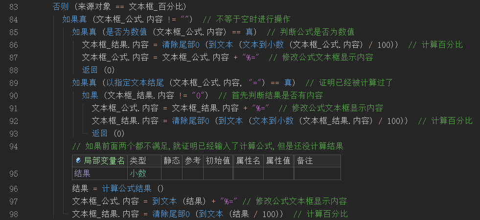
(11) “文本框_加/减/乘/除” 被单击
因运算符的处理都是相同的，所以可以放在一起进行判断，减少代码重复使用。
100-103行：
用于判断公式文本框内容为空时，如果被单击的运算符为减号，则可以进行输入。
105-107行：
如果公式文本框的内容为数值，则直接输入运算符。
108-110行：
验证当前是否已经进行过计算，如果已经被计算过了，则将计算结果显示在公式文本框中，并输入对应的运算符。
111-112行：
当公式文本框以小数点结尾时，直接返回不输入任何运算符。
113-116行：
如果前面的添加都不满足，则证明已经输入了计算公式，但是还未进行计算。
首先取出计算结果，并将计算结果显示在公式文本框中，并输入运算符，最后需要将结果文本框设置为0。
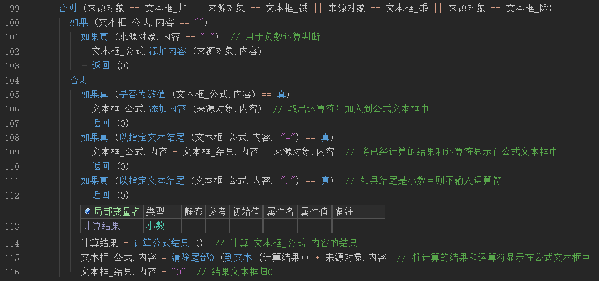
(12) “文本框_等于”被单击
当公式文本框不等于空时，取出最右侧的文本，并判断其是否不等于任何符号。
如果满足条件则进行计算，将计算结果显示在结果文本框中。
注意给公式文本框添加等于号，方便其它文本框组件点击时验证是否被计算过。
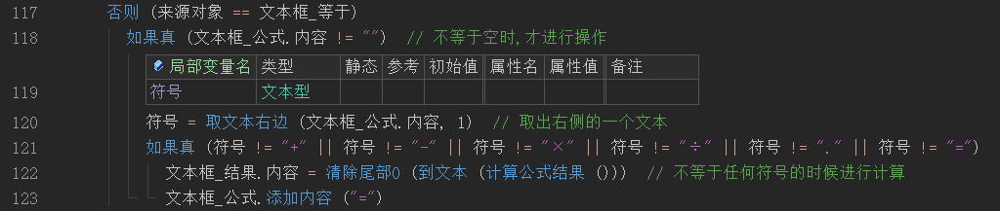
(13) “文本框_点”被单击
首先要判断公式文本框的内容不等于可空，当满足条件后再进行相关处理。
126-138行：
本段代码的作用，是用运算符对公式文本框的内容进行分割，将分割的结果赋值给文本数组。
其作用是方便验证运算符右侧被运算的数值，是否为整数，从而来决定是否在公式文本框中输入小数。
139-142行：
如果任何运算符都没有找到，就证明还没有输入运算符，此时就直接验证公式文本框的内容是否为整数，满足条件后就在公式文本框中输入小数点，并返回。
143-146行：
最后这段代码就是用于验证运算符右侧被运算的数值是否已经输入过小数点，如果满足条件则输入小数点并返回。
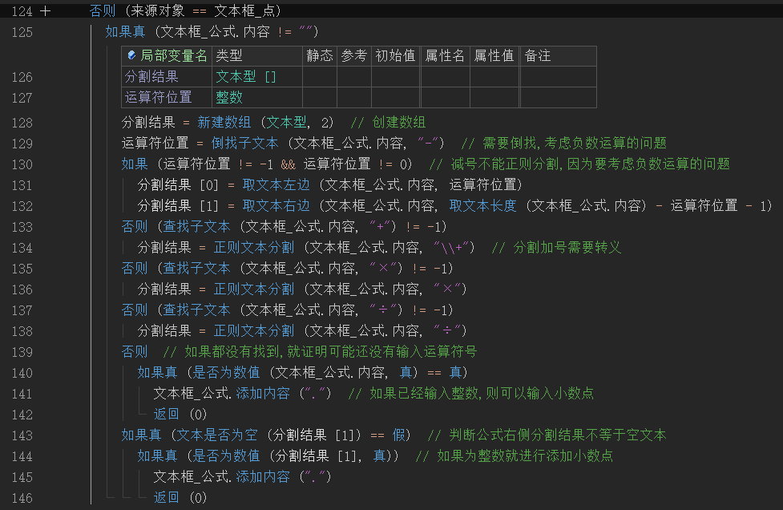
(14) 数字键被单击
在这里可能会有疑问，因为并没有写条件，怎么就一定是所有的数字键？“文本框_公式”被点击，会不会在这里被执行？
这点可以放心，在火山安卓中除了按钮类型的组件外，其它类型的组件都需要设置“支持单击”属性为真，才可以触发被单击事件。
因“文本框_公式”并没有设置支持单击属性，因此“否则”子语句体中的代码只能是其它的所有数字键。
148-152行：
当公式文本框的内容为空时，首先判断输入数字是否为0，如果为0则自动补充小数点，否则直接输入数字。
154-156行：
当公式文本框不为空时，验证一下当前输入的公式是否已经进行过计算，如果被计算过，则直接将公式文本框的内容赋值为要输入的数字。
157-158行：
如果公式文本框的内容为0，按下的数字键也为0时，不进行输入直接返回。
159-166行：
本段代码的作用是防止，譬如：11+0的情况下继续输入数字。
这里可能会有疑问，明明已经处理过对0自动补充小数，为什么要需要验证？
这里不要忘记，计算器还提供有删除功能，所以这里依然需要验证一下，其计算公式的结尾是否满足：运算符 + 0的情况，如果满足条件则直接返回。
167-170行：
用于验证计算公式的结尾是否为运算符，当结尾为运算符时，判断点击的是否为数字键0，如果为0则自动补充小数点。
171行：
当公式文本框不为空时，且以上条件都不满足时，证明可以直接输入对应数字。
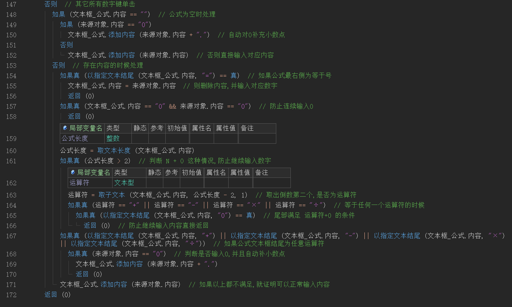
至此整个简易计算器编写完毕，在开发过程中要额外注意全角符号和半角符号的问题，譬如：“-”、“－”是不同的。
在程序编写过程中要么全部使用半角，要么全部使用全角，为减少计算过程中产生不必要的错误。
2.4 调试运行
打开一个安卓模拟器(推荐使用雷电模拟器)，在模拟器运行完毕后，按下快捷键“F5”进行程序调试。
调试时如果火山报以下错误，证明项目缺少模块，配置模块即可解决。
第二条错误提示缺少返回值，是因为火山在预编译时，没有找到正则表达式类，因此语句被忽略，从而会导致整个方法的返回语句不完整。
因此，只要将项目模块配置完善，火山编译器能检查到正则表达式类，第二条错误也就解决了。
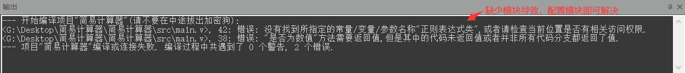
计算测试：
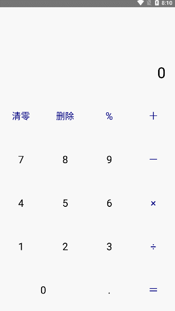
如果在调试过程中如果遇到程序闪退，或者输入的计算公式存在问题的情况下，可以参考《程序调试和异常处理》章节中的内容，对程序进行详细的调试，找到问题并解决问题。
3、案例下载
点击下载当前教程案例。